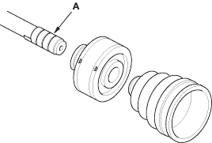
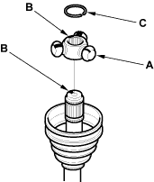
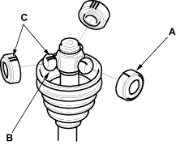

Special Tools Required
- Boot band tool, KD-3191 or equivalent commercially available
- Boot band pincers, KENT-MOORE J-35910 or equivalent commercially available
NOTE: Refer to the Exploded View as needed during this procedure.
Inboard Joint Side:
- Wrap the splines with vinyl tape (A) to prevent damage to the inboard boot and dynamic damper.

- Install the dynamic damper and inboard boot onto the driveshaft, then remove the vinyl tape. Take care not to damage the inboard boot and dynamic damper.

- Install the spider (A) onto the driveshaft by aligning the marks (B) on the spider and the end of the driveshaft.

- Fit the circlip (C) into the driveshaft groove. Always rotate the circlip in its groove to make sure it is fully seated.
- Fit the rollers (A) onto the spider (B) with their high shoulders facing outward, and note these items:
- Reinstall the rollers in their original positions on the spider by aligning the marks (C).
- Hold the driveshaft pointed up to prevent the rollers from falling off.
